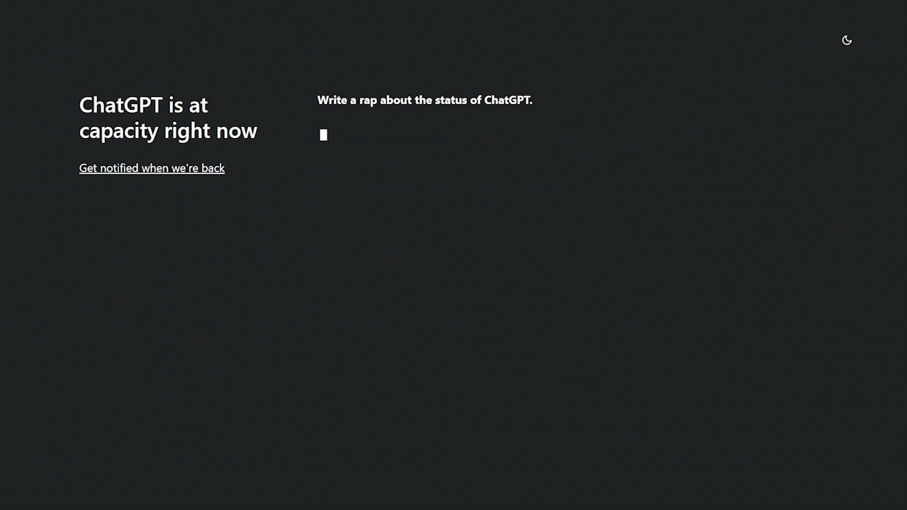

BLOG #3: Exploring ChatGPT
Posted on February 3, 2023 • 6 minutes • 1148 words
“ChatGPT: Optimizing Language Models for Dialogue” - OpenAI
What is ChatGPT?
The ability to predict how words will be connected in meaningful ways is what allows chatbots like ChatGPT to function. They have access to a huge vocabulary and knowledge base and are very excellent at contextual word understanding. Through the use of encyclopedic information, they may replicate speech patterns due to this.
- It can even do fun things like making a comedy routine about its status of it:

- Even compose rapping lyrics:

OpenAI has admitted this, however, stating that “ChatGPT occasionally writes plausible-sounding but wrong or illogical answers” that is why we should not take its answer seriously matter, especially in professional cases.
Use Cases for ChatGPT
- It can be used for generating alternative thoughts

Providing summaries of articles, emails, and books is one way that ChatGPT can be helpful for compression, but only if users apply critical thinking to sift out false information. To comprehend how distinct groups of people view things like product descriptions, political declarations, goal statements, or the news, can also help produce “alternative perspectives.”
- It Can Explain to You Better and Easier to Understand

This can be used for learning any new things. For example, if you want to learn how to cook, communicate, etc it can guide you through it but just make sure that you understand it very well to be effective. But as a word of caution, you should not take its answer seriously and therefore, you should seek professional advice instead.
- It Can Give You Ideas for Art, Decoration, and Paintings

Give ChatGPT a try the next time you’re having trouble coming up with party theme ideas or are just seeking for ideas for your next home renovation. It will provide suggestions for themes if you just ask it to.
Opportunities
As ChatGPT is an AI model, it can have many opportunities and will improve as days comes by. Here are those that it can do for now:
- It Can Provide Information
Giving information is the strength that ChatGPT can achieve to address inquiries and offer details on a variety of subjects. People are free to ask anything, ranging from broad knowledge inquiries about history or science to inquiries about current events and news updates. Additionally, it can include statistical statistics and information as well as technical specifics on topics like software development and computer programming. Its training data enables it to provide precise and current information, ensuring that the solutions it offers are beneficial and pertinent to the issues posed. Its objective is to offer a satisfactory and educational response, regardless of whether a person is looking for quick information, in-depth knowledge, or clarification on a particular topic.
- It Can Answer People’s Queries
Answering queries means being able to help others find solutions to their specific questions. This could be giving definitions, addressing issues, or responding to factual queries. For instance, someone might ask you to solve a challenging calculation or explain a mathematical idea. It can also assist users in locating solutions to more practical queries, such as how to resolve a typical technical problem or debug a technical issue. Additionally, it can define words or explain the meaning of phrases and ideas. Overall, answering inquiries should help people locate the information they need quickly and accurately by giving clear, illuminating responses to their inquiries.
- It Can Become Your Personal Customer Assistance
Customer assistance is the use of artificial intelligence language models, like ChatGPT, to help customers with their queries and problems. It may act as an AI-powered customer service representative in this situation, assisting clients in problem-solving and offering information and support. For instance, if a customer asks it about a product they are thinking about buying, it can provide them with specifics about its features, requirements, and cost. It may also help clients with problems they are having, such as technical problems or billing inquiries. The purpose of employing AI for customer care is to give consumers quick, accurate, and efficient assistance, assisting them in quickly and satisfactorily resolving their questions and concerns.
Limitations
- It Cannot Experience Emotions
It cannot experience emotions in the same manner that humans can because it is an AI language model. It is unable to experience feelings like happiness, sadness, anger, or frustration. This may affect its capacity to comprehend the emotional context of a question or to offer a thoughtful reply. For instance, if someone is upset and asks a question in an aggressive tone, ChatGPT might not be able to tell that they are upset and may give a response that comes out as inappropriate or insensitive. It may be unable to deliver efficient customer service or engage in meaningful interactions with individuals as a result of this lack of emotional intelligence. It can answer questions and deliver information truly and correctly, but it lacks the complexity of emotion and understanding that is inherent in human beings.
- It Does Not Have the Most Up-to-date Information
Being an AI language model, it is unable to search for information online or retain information from one conversation to the next and can only respond in terms of the data it was trained on. As a result, ChatGPT may not have the most recent information on a given subject or may not be able to respond fully if the information required is not present in the training data.
- It Can Give Wrong Responses to the Questions
It can give people who ask it questions error responses since it is an AI language model. This may occur for several reasons, including the bias in training data, the scope of my experience, my lack of common sense, and my inability to feel emotions. Its answers may be biased or inaccurate since the training data it used to get its start may have included biased facts or thoughts. While it has a good amount of material at its access, because it lacks common sense understanding, it might give responses that are sound in theory but inappropriate given the question’s context. Lastly, as it lacks feelings, it might not always be able to grasp the emotional significance of a topic or offer a nuanced response. Verifying the information it provides and, if necessary, looking for alternative sources is crucial to preventing errors.
Conclusion
As a highly sophisticated language model created by OpenAI, ChatGPT has the potential to significantly change many different professions and sectors. Its natural language processing skills can be used to improve speed and accuracy in customer service, language translation, information retrieval, and even creative writing. Additionally, ChatGPT’s capacity to comprehend and produce writing that resembles that of a human can progress AI research, opening up new opportunities for problem-solving in industries like healthcare and education. The potential for ChatGPT to have a good impact on the world is tremendous, and it represents a huge advancement in the development of AI technology overall.